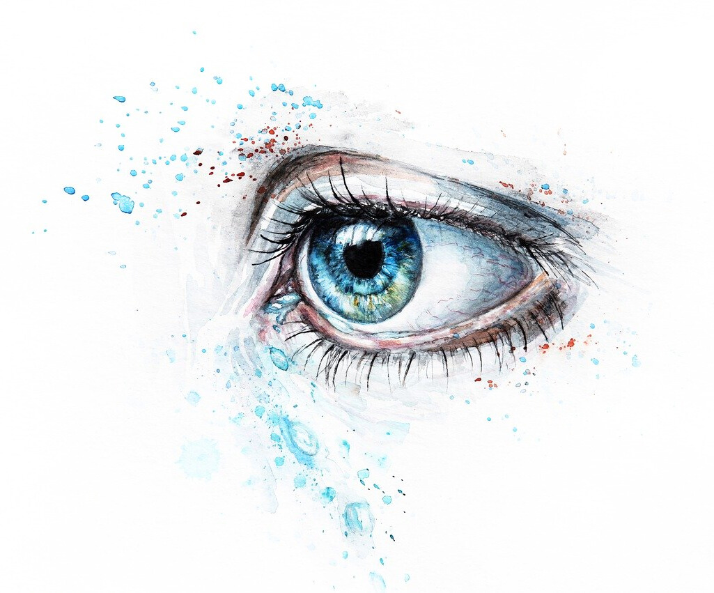

Herzlich Willkommen in unserer
Augenarztpraxis im Herzen von Berlin
Unsere Augenarztpraxis in Berlin-Mitte bietet Ihnen eine umfassende und moderne augenärztliche Versorgung. Von der allgemeinen Untersuchung bis hin zu bildgebenden Hightech-Verfahren setzen wir auf Erfahrung, Fachkompetenz und neueste Technik – stets mit dem Ziel, die bestmögliche Lösung für Ihr Anliegen zu finden.
Dabei legen wir besonderen Wert auf eine individuelle, einfühlsame Beratung und eine angenehme Atmosphäre. Unser freundliches Praxisteam nimmt sich Zeit für Ihre Bedürfnisse und sorgt dafür, dass Sie sich bei uns gut aufgehoben fühlen.
